Manual del cobrador
Bienvenido
Con APEX llevas en tu celular toda tu ruta de cobro: a quién visitar hoy, cuánto debe cada cliente y cuánto has cobrado. Cada pago que registras queda guardado al instante y genera un recibo para el cliente.
Lo que puedes hacer
Tu ruta del día
Ver los clientes que debes visitar, lo que deben y lo que tienen atrasado.
Cobrar
Registrar pagos y enviar el recibo por WhatsApp.
Cuando no pagan
Dejar registrado por qué no pagó o la promesa de pago.
Tu caja
Anotar tus gastos de ruta y saber cuánto debes entregar.
Ordenar tu ruta
Poner los clientes en el orden en que los visitas, para no confundirte.
Hoja de ruta
Un PDF con lo que debes recoger hoy, para tenerlo a mano o imprimirlo.
Sin internet
Seguir cobrando sin señal: todo se guarda en el celular y se envía solo al volver la conexión.
Lo que no puedes hacer
Para proteger el dinero y la información, como cobrador no puedes: crear créditos, anular pagos, cambiar pagos de fecha, ver clientes de otros cobradores, ni ver reportes. Si te equivocaste en un pago, avisa de inmediato al administrador.
Antes de salir a la ruta
- Celular con batería cargada y datos móviles o wifi.
- Tu usuario y contraseña (son personales: no los compartas con nadie).
- Revisar tu ruta y las promesas de pago del día.
- Abrir la Ruta de cobro con señal (wifi o datos) antes de salir: así queda guardada en el celular por si te quedas sin internet.
- Si quieres, descargar la Hoja de ruta (PDF) del día.
- Revisar que no tengas nada pendiente por enviar de días anteriores (ver capítulo 8).
Ingresar al sistema
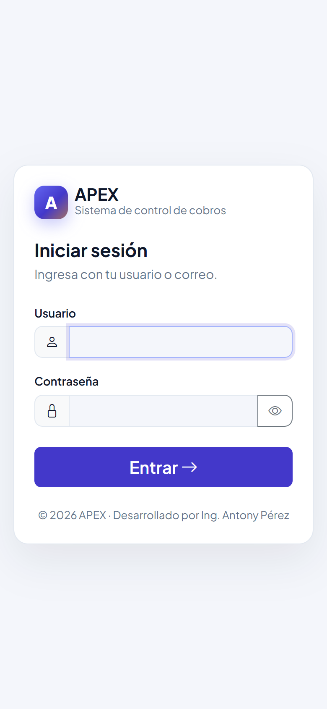
- Abre el navegador del celular (Chrome) y entra a la dirección que te dio el administrador.
- Escribe tu usuario y tu contraseña.
- Toca Entrar →.
Tu primera vez: cambiar la contraseña
La primera vez el sistema te pide crear tu propia contraseña. Debe tener:
- Mínimo 10 caracteres, con mayúsculas y minúsculas, al menos un número y un símbolo (# $ % . ! ?).
- No puede tener tu nombre, tu usuario ni tu cédula.
Mientras escribes, cada requisito se marca en verde cuando se cumple. Ejemplo de buena contraseña: Moto.Azul#Ruta24.
El menú
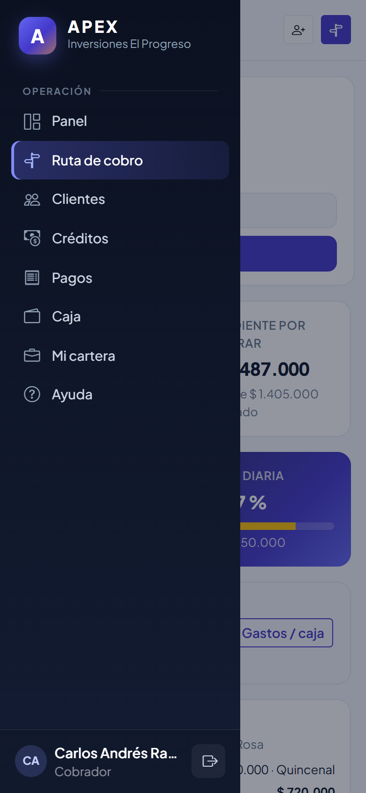
Toca el botón ☰ (arriba a la izquierda) para abrir el menú:
| Panel | Resumen de tu cartera y tu recaudo. |
| Ruta de cobro | Los clientes a visitar hoy. Es tu pantalla principal. |
| Clientes | Todos tus clientes. |
| Créditos | Los créditos de tus clientes. |
| Pagos | Los pagos que has recibido. |
| Caja | Tus gastos y el dinero que debes entregar. |
| Mi cartera | Tus indicadores y la lista de tus clientes. |
| Ayuda | Este manual y la guía rápida, para consultarlos desde el celular. |
Abajo del menú está tu nombre (toca para ir a Mi perfil) y el botón para cerrar sesión.
Tu ruta del día
Al ingresar llegas directo a la Ruta de cobro. Arriba ves el resumen y abajo una tarjeta por cada cliente que debes visitar.
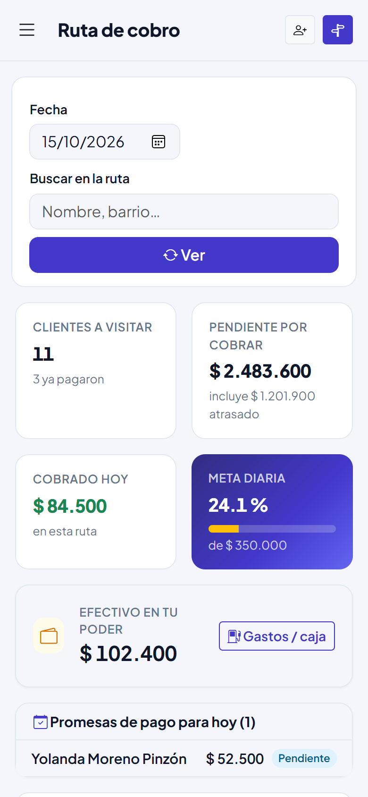
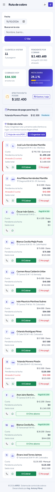
Resumen
- Clientes a visitar y cuántos ya pagaron.
- Pendiente por cobrar (incluye lo atrasado).
- Cobrado hoy.
- Meta diaria y tu avance.
- Efectivo en tu poder.
- Promesas de pago de hoy.
Cómo leer la tarjeta de un cliente
| Número (1, 2, 3…) | El orden de visita: en qué turno pasas por ese cliente. |
| Nombre y dirección | A quién visitar y dónde. Toca el nombre para ver el crédito completo. |
| Cuota | Valor de cada cuota y si es diaria, semanal, quincenal o mensual. |
| Pendiente a la fecha | Lo que el cliente debería haber pagado hasta hoy. |
| Atrasado (en rojo) | Cuotas de días anteriores que no pagó. La tarjeta tiene un borde rojo. |
| Saldo total | Todo lo que le falta pagar del crédito. |
| Tarjeta verde "Pagó" | El cliente ya pagó hoy. |
| Prometió pagar (recuadro azul) | El cliente se comprometió a pagar en esa fecha. |
Los botones de la tarjeta: 📞 llamar, WhatsApp (abre un recordatorio con el valor de la cuota), Cobrar y ✕ No pagó.
Ordenar tu ruta (orden de visita)
Los clientes aparecen en el orden en que tú los visitas, no por nombre. Tú decides ese orden según tu recorrido, y el sistema lo recuerda: aunque cierres sesión o pasen los días, la ruta sale siempre igual.
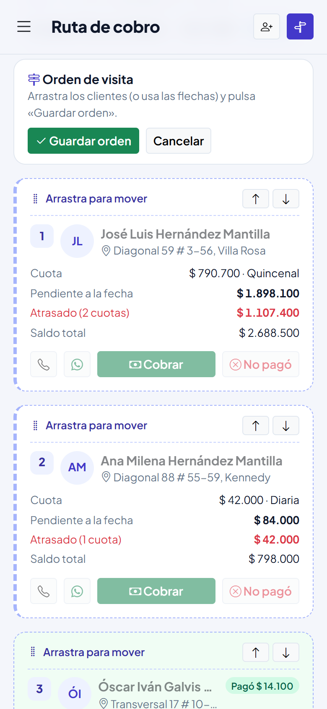
- En la ruta, en el recuadro Orden de visita, toca Organizar ruta.
- Las tarjetas quedan con borde punteado. Mantén presionada la tarjeta de un cliente un momento y arrástrala a su lugar. También puedes usar las flechas ↑ y ↓ de cada tarjeta.
- Los números se actualizan mientras mueves.
- Toca Guardar orden. Si te arrepientes, toca Cancelar y todo queda como estaba.
Cobrar a un cliente
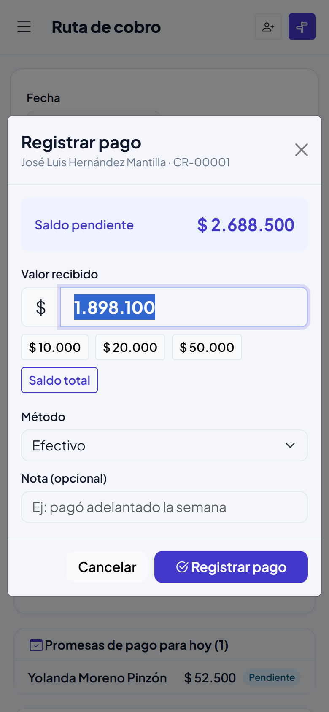
- Toca Cobrar en la tarjeta del cliente.
- Revisa el saldo pendiente que aparece arriba.
- En Valor recibido ya viene lo que debe a la fecha. Si te pagó otro valor, bórralo y escribe lo que recibiste, o usa los botones rápidos.
- Elige el método: Efectivo, Nequi, Daviplata, Transferencia u Otro.
- Si quieres, escribe una nota (por ejemplo "pagó adelantado").
- Toca Registrar pago.
Entregar el recibo
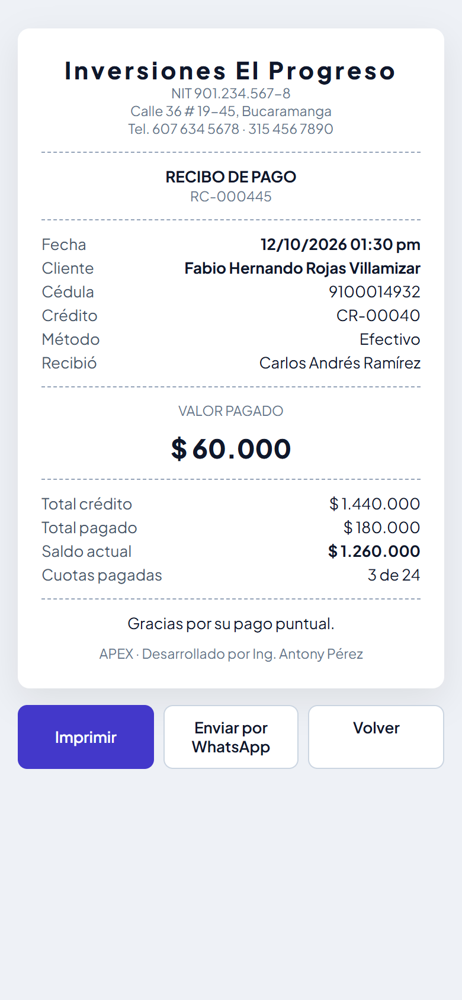
Después de registrar el pago aparece un aviso verde con el botón Ver recibo. En el recibo puedes:
- Enviar por WhatsApp: se abre el chat del cliente con el recibo escrito (número, valor, fecha y saldo).
- Imprimir, si tienes una impresora portátil.
La tarjeta del cliente queda en verde con el valor que pagó. Si te da otro abono el mismo día, toca Otro abono.
Si te equivocaste en un pago
No registres otro pago para "corregir". Avisa de inmediato al administrador: él puede anular el pago equivocado y tú registras el correcto.
Cuando el cliente no paga
Si visitas o llamas a un cliente y no paga, regístralo siempre. Así la oficina sabe que sí hiciste la visita y qué pasó.
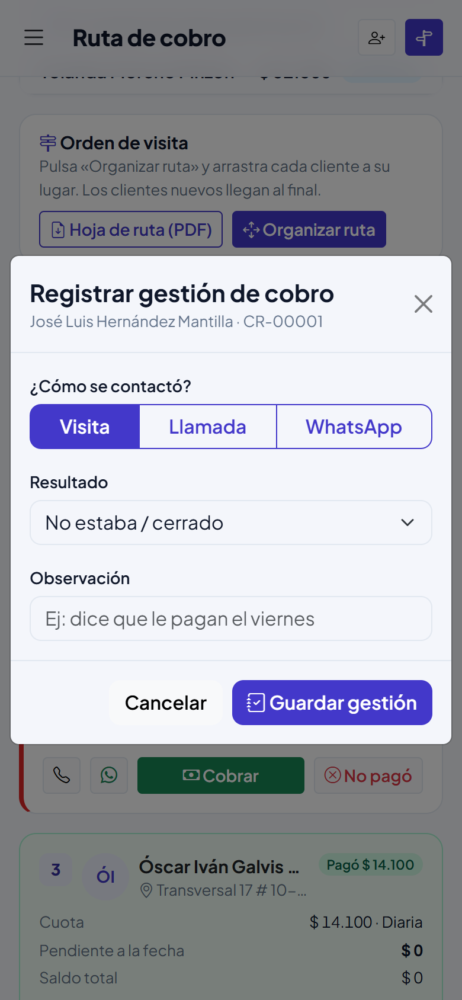
- Toca ✕ No pagó en la tarjeta del cliente.
- Indica cómo lo contactaste: Visita, Llamada o WhatsApp.
- Elige qué pasó: no estaba / cerrado, sin dinero hoy, se niega a pagar, dirección errada / se mudó, u otro.
- Si el cliente promete pagar, elige Promesa de pago e indica la fecha y el valor prometido.
- Escribe una observación y toca Guardar gestión.
La hoja de ruta (PDF)
La hoja de ruta es un documento con todo lo que debes recoger en el día, en tu orden de visita. Sirve para tenerla a mano, imprimirla o guardarla en el celular por si te quedas sin internet.
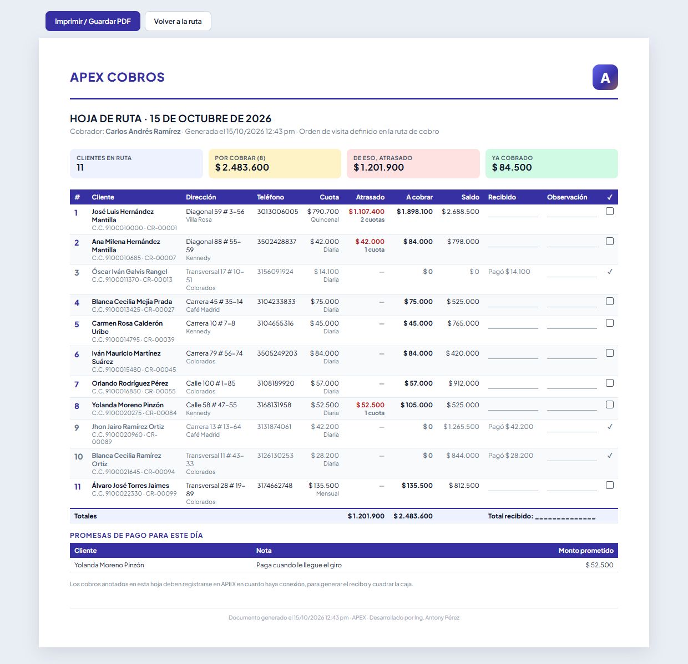
- En la ruta toca Hoja de ruta (PDF). Se abre en una pestaña nueva.
- Toca Imprimir / Guardar PDF. En el celular elige Guardar como PDF; en el computador, tu impresora o "Guardar como PDF".
La hoja trae:
- Arriba: cuántos clientes visitar, cuánto hay por cobrar, cuánto de eso está atrasado y lo que ya cobraste.
- Una fila por cliente con su número de visita, nombre, cédula, código del crédito, dirección, teléfono, cuota, atrasado, lo que debes cobrar y saldo.
- Espacios en blanco para anotar a mano lo recibido y una observación, y una casilla ✓ para marcar las visitas hechas. Los clientes que ya pagaron aparecen con "Pagó $…".
- Al final, los totales y las promesas de pago del día.
Trabajar sin internet
Si te quedas sin señal en la mitad de la ruta, sigue trabajando normal. APEX guarda en tu celular lo que registres y lo envía solo, en el mismo orden, cuando vuelva la conexión.
Qué puedes hacer sin internet
| Acción | Sin internet |
|---|---|
| Ver tu ruta y la hoja de ruta | Sí. Ves la última copia guardada. |
| Cobrar desde la ruta | Sí. Se guarda en el celular y se envía después. |
| No pagó / promesa desde la ruta | Sí. Se guarda en el celular y se envía después. |
| Ordenar tu ruta | Sí. Se guarda en el celular y se envía después. |
| Consultar clientes, créditos, pagos, caja, tu cartera y el panel | Sí, las pantallas que hayas abierto antes con señal (ver 8.7). |
| Crear clientes, registrar gastos, cerrar sesión y lo demás | No. Necesitan internet. |
Prepárate antes de salir
- Abre la Ruta de cobro con señal (wifi o datos). En ese momento el celular guarda tu ruta, la hoja de ruta y la ficha de cada cliente del día.
- Instala APEX en el celular (capítulo 2): así lo abres sin señal desde su ícono.
- No borres los datos del navegador mientras tengas cobros pendientes por enviar.
Cómo se ve sin conexión
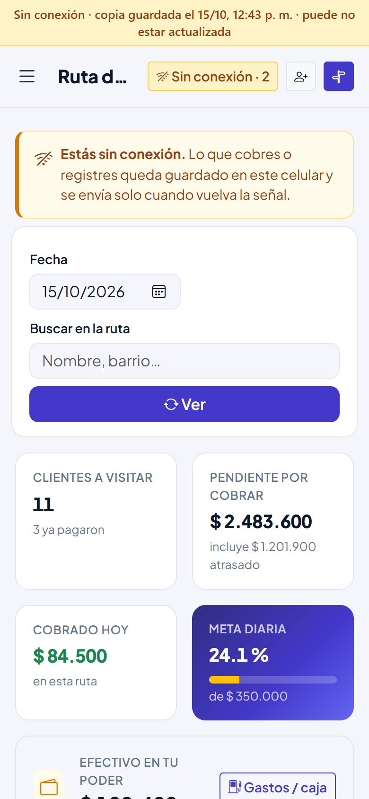
- Arriba aparece una franja amarilla: "Sin conexión · copia guardada el …". Indica de qué hora es la información que estás viendo.
- En la barra superior aparece "Sin conexión · 2": el número es cuántas cosas tienes guardadas en el celular, sin enviar.
- Debajo, el aviso "Estás sin conexión" te recuerda que lo que registres queda guardado.
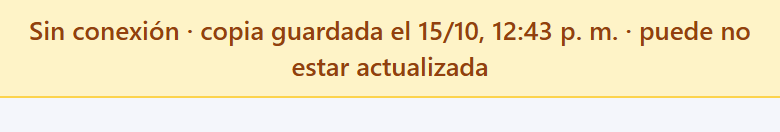
Cobrar sin internet
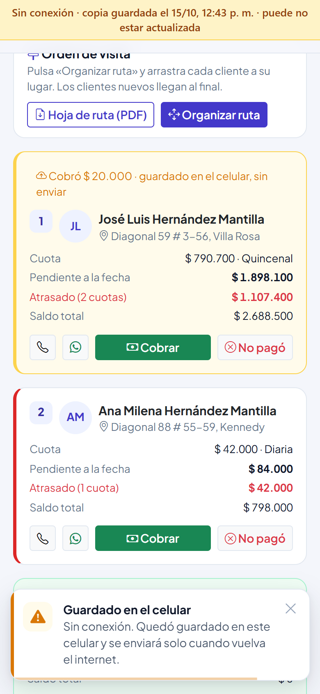
- Cobra igual que siempre: Cobrar, escribe el valor y toca Registrar pago.
- Aparece el aviso amarillo "Guardado en el celular".
- La tarjeta del cliente se pone amarilla y dice "Cobró $… · guardado en el celular, sin enviar".
Lo mismo pasa con ✕ No pagó.
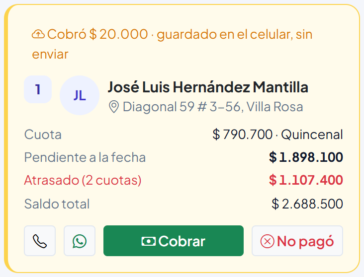
Lo que tienes guardado sin enviar
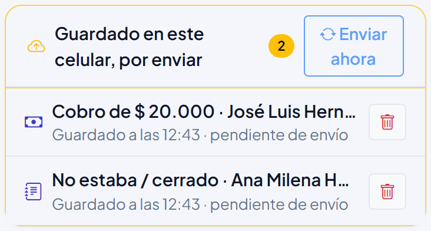
En la ruta aparece el recuadro "Guardado en este celular, por enviar" con cada cobro, gestión u orden de ruta guardado y la hora en que lo registraste.
- Enviar ahora: lo intenta enviar de inmediato (si hay señal).
- 🗑 Descartar: borra esa operación del celular y no llegará al sistema. Úsalo solo si te equivocaste. Si descartas un cobro que sí recibiste, debes registrarlo de nuevo.
Cuando vuelve la señal
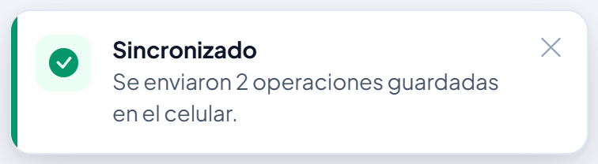
No tienes que hacer nada. Apenas el celular recupera internet (y APEX está abierto), envía todo en el orden en que lo registraste. Aparece el aviso verde "Sincronizado" y la ruta se actualiza con los datos reales: la tarjeta queda en verde con "Pagó" y el recibo ya existe en .
- El pago queda con la hora en que cobraste, no la hora en que se envió, y con la nota "Registrado sin conexión".
- Si cerraste APEX sin señal, lo guardado se envía la próxima vez que lo abras con internet.
- Si mientras estabas sin señal se cerró tu sesión, la barra dice "Ingresa para enviar N": vuelve a ingresar con tu usuario y se envía solo. No se pierde nada.
Consultar otras pantallas sin internet
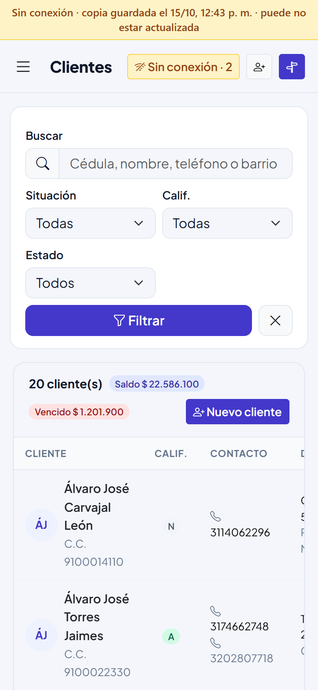
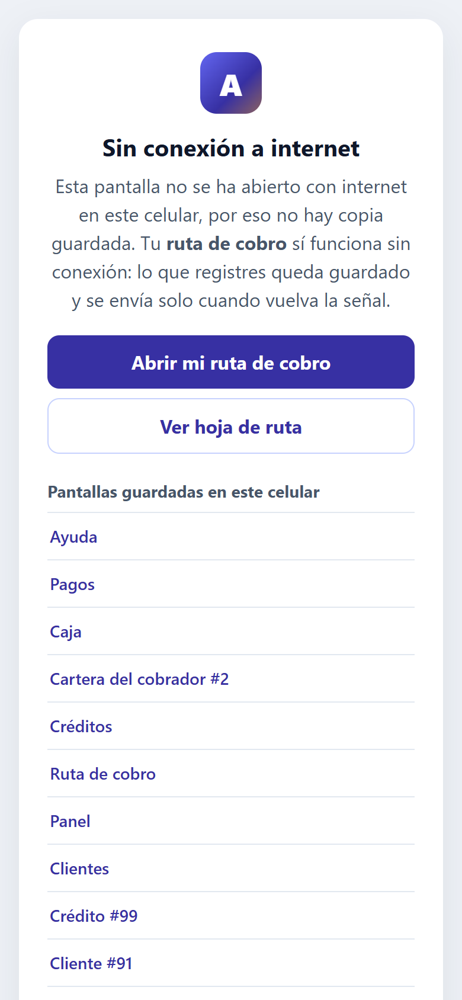
Cada pantalla que abres con señal queda guardada en el celular. Además, cada vez que abres la ruta con señal se guardan tu panel, clientes, créditos, pagos, caja, tu cartera y la ficha de cada cliente del día.
Sin señal esas pantallas se abren con la franja amarilla "copia guardada": los datos son de esa hora y pueden haber cambiado.
Si abres una pantalla que nunca abriste con señal, aparece "Sin conexión a internet" con la lista de las pantallas que sí tienes guardadas.
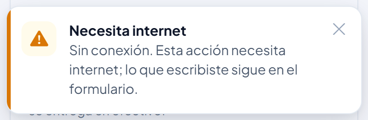
Si sin señal tocas algo que necesita internet (por ejemplo registrar un gasto o crear un cliente), aparece el aviso "Necesita internet". Lo que escribiste sigue en el formulario: espera la señal y vuelve a intentarlo.
Los cobros sin internet se hacen desde la Ruta de cobro, no desde la ficha del crédito.
Registrar un cliente nuevo
- Toca el botón 👤+ de la barra superior (o → Nuevo cliente).
- Llena los datos: cédula, nombres, apellidos, teléfono principal y dirección son obligatorios. Agrega el segundo teléfono, barrio, negocio y una referencia personal.
- En Observaciones anota lo que sirva para cobrar (horario, punto de referencia).
- Toca Registrar cliente. El cliente queda automáticamente en tu cartera.
Tus clientes y tu cartera
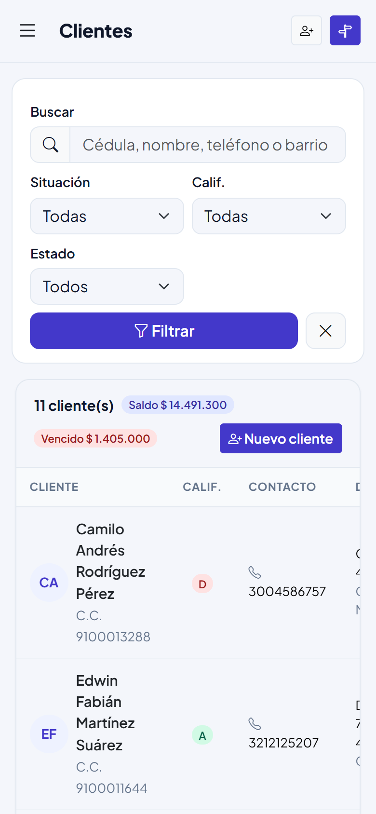
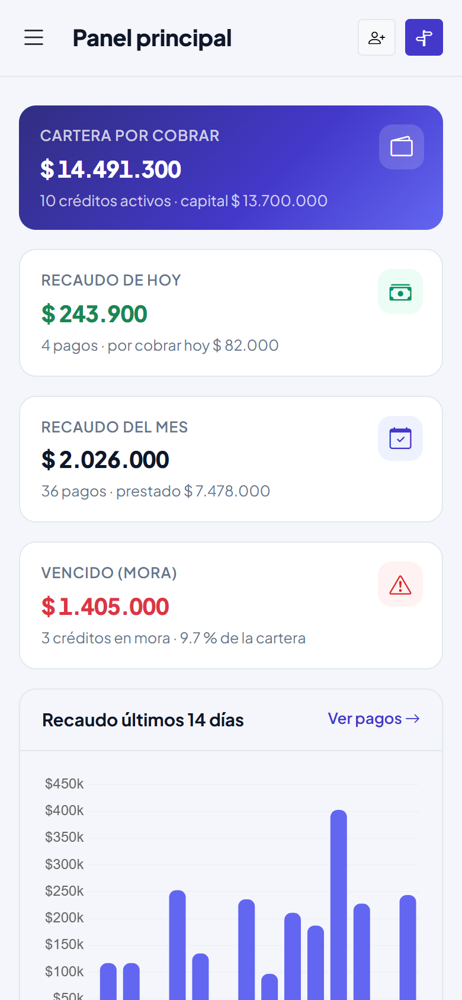
En ves solo tus clientes, con su calificación, saldo y si están al día o en mora. Puedes buscarlos por nombre, cédula, teléfono o barrio.
La calificación (A, B, C, D) indica qué tan cumplido es el cliente: A es excelente y D es riesgoso.
En ves cuántos clientes tienes, el dinero en tu cartera, lo vencido, tu recaudo y la gráfica de los últimos 14 días.
Tu caja: gastos y entrega del dinero
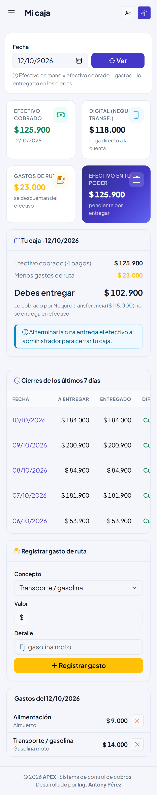
Registrar un gasto de ruta
- Entra a (o toca Gastos / caja en la ruta).
- Elige el concepto: transporte / gasolina, alimentación, papelería, recarga u otro.
- Escribe el valor y un detalle, y toca Registrar gasto.
Solo puedes registrar gastos del día de hoy. Si te equivocas puedes anularlo el mismo día, antes de que cierren tu caja.
¿Cuánto debo entregar?
- Al terminar la ruta, revisa en el valor Debes entregar.
- Verifica que no tengas nada por enviar en el celular (capítulo 8). Si hay, conéctate a internet y espera el aviso "Sincronizado".
- Cuenta el dinero y entrégalo al administrador.
- El administrador registra el cierre. Si falta dinero queda como faltante a tu cargo en tu efectivo en tu poder.
Consejos para una buena ruta
- Registra cada pago en el momento en que lo recibes, no al final del día.
- Envía siempre el recibo por WhatsApp.
- Registra cada visita en la que el cliente no pagó, con el motivo real.
- Atiende primero a los clientes con borde rojo (atrasados) y a los que prometieron pagar hoy.
- Revisa tu avance de la meta diaria a mitad de la jornada.
- Organiza tu orden de visita según tu recorrido real; cuando te llegue un cliente nuevo, ubícalo en su lugar.
- Abre la ruta con señal antes de salir y, si estuviste sin internet, conéctate antes de entregar el dinero.
- Cierra la sesión si le prestas el celular a alguien. Si pierdes el celular, avisa de inmediato al administrador para que bloquee tu usuario.
Preguntas frecuentes
No me aparece un cliente
Seguramente está asignado a otro cobrador. Pregunta al administrador.
El sistema me sacó y debo volver a ingresar
Por seguridad la sesión se cierra después de 30 minutos sin usar el sistema. Vuelve a ingresar. Si tenías cobros guardados sin enviar, no se pierden: se envían solos cuando ingresas.
Me quedé sin señal en la mitad de la ruta
Sigue cobrando desde la Ruta de cobro. Todo queda guardado en el celular y se envía solo cuando vuelva la señal (capítulo 8).
¿Se puede registrar un cobro dos veces por la mala señal?
No. Cada cobro lleva un código único: aunque llegue dos veces al sistema, se guarda una sola vez. Lo que no debes hacer es registrarlo de nuevo a mano; revisa primero el recuadro "por enviar".
La barra dice "Ingresa para enviar"
Tu sesión se cerró mientras estabas sin señal. Ingresa con tu usuario y lo guardado se envía solo.
Un cobro quedó "por revisar"
El sistema no lo aceptó; el motivo aparece en rojo en el recuadro de la ruta. No lo descartes sin hablar con el administrador.
Voy a cambiar de celular o a borrar los datos del navegador
Antes, conéctate a internet y espera a que no quede nada por enviar. Lo guardado vive solo en ese celular: si borras los datos antes de enviarlo, se pierde.
Un cliente nuevo no está donde lo visito
Los clientes nuevos llegan al final de la ruta. Toca Organizar ruta, muévelo a su lugar y guarda.
Me dice "Demasiados intentos fallidos"
Escribiste mal la contraseña 5 veces. Espera 15 minutos o pide al administrador una contraseña nueva.
El cliente pagó por Nequi
Registra el pago normalmente y elige el método Nequi. Ese dinero no lo entregas en efectivo.
El cliente quiere pagar todo lo que debe
En la ventana de pago toca Saldo total y registra el pago. El crédito queda pagado.
Mi efectivo en mano sale negativo
Tus gastos fueron mayores a lo que cobraste: la empresa te debe esa diferencia.
APEX · Sistema de control de cobros · Manual del cobrador · Versión 1.3
© APEX · Desarrollado por Ing. Antony Pérez